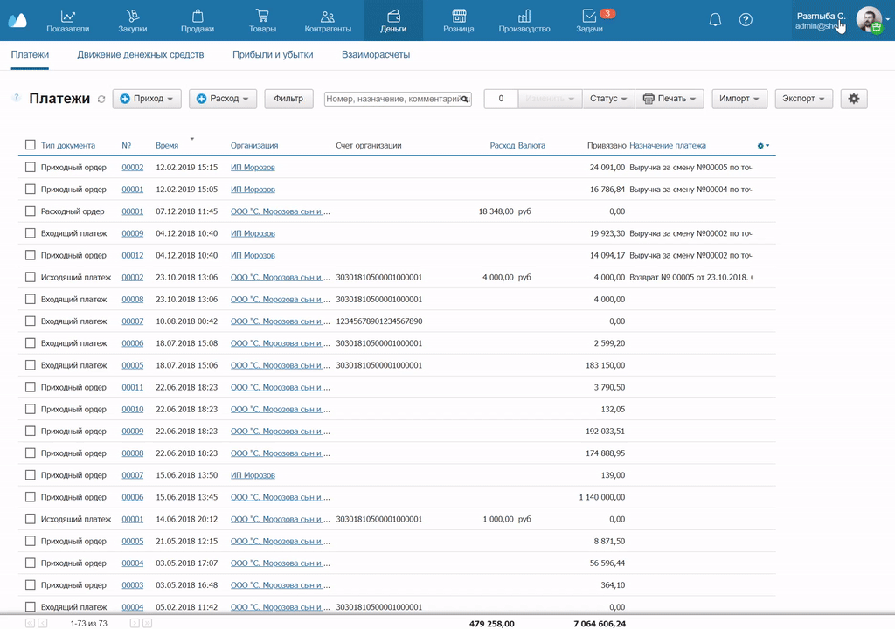
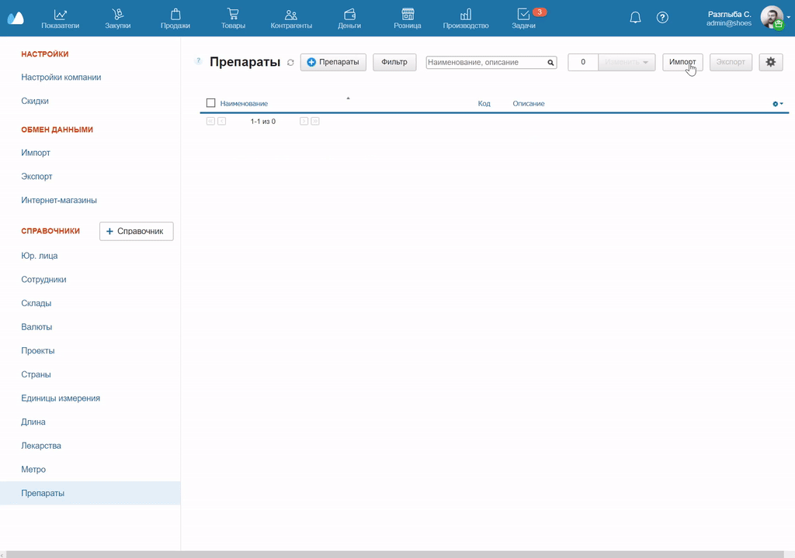
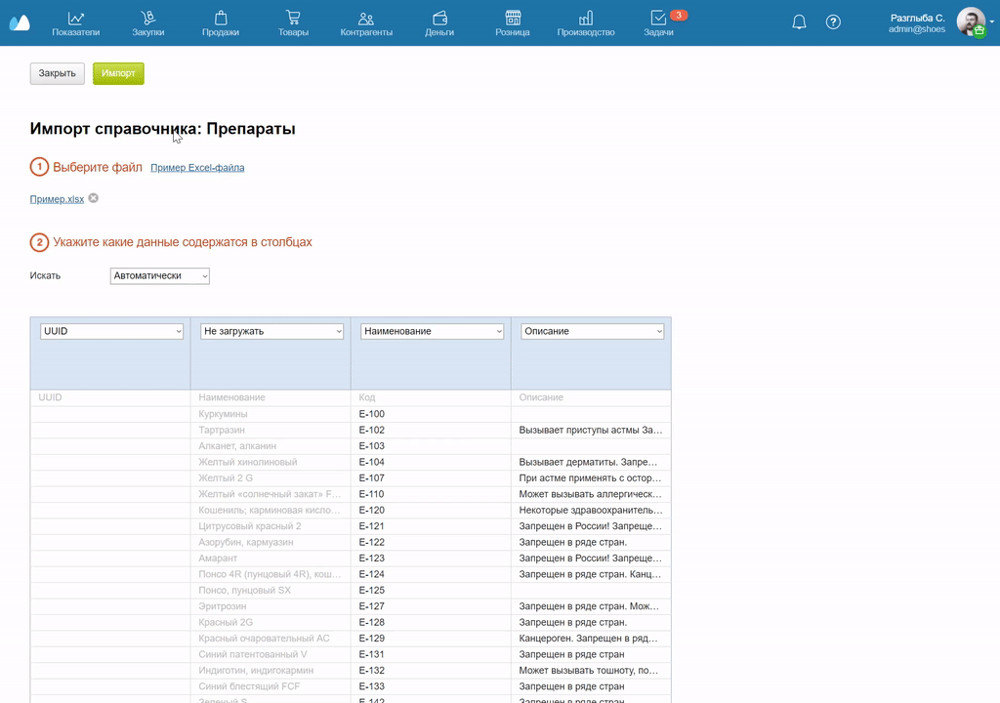
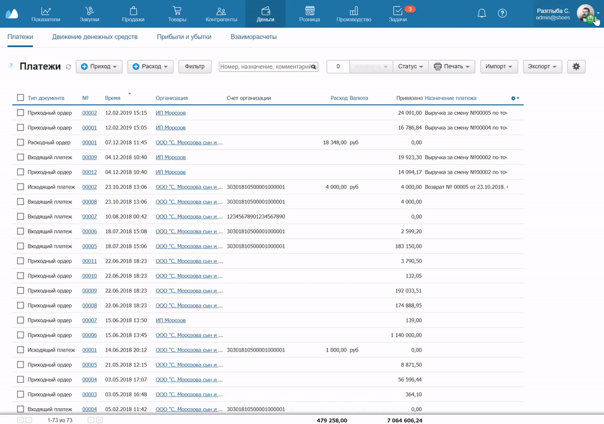
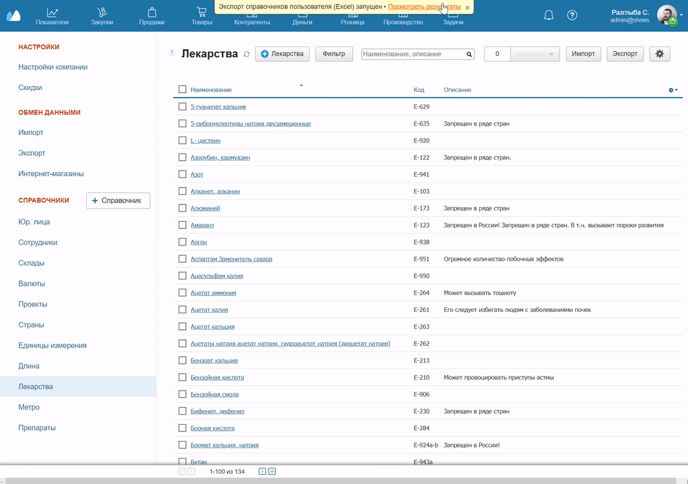

В МоемСкладе можно импортировать и экспортировать дополнительные справочники полностью и частями.
Импортировать справочник
- Нажмите на имя пользователя в правом верхнем углу МоегоСклада и в выпадающем списке выберите Настройки.
- В открывшемся окне в колонке слева нажмите на название справочника, который хотите импортировать.
- Нажмите на кнопку Импорт в верхней части новой страницы.

- В открывшемся окне нажмите кнопку Загрузить или перетащите файл в поле загрузки — оно отмечено пунктирной линией. Допустимые форматы — .xls, .xlsx, .csv. Отобразится структура файла.
Чтобы посмотреть образец справочника, нажмите Пример Excel-файла сразу под заголовком окна.
- Укажите настройки колонок в зависимости от содержания. Для этого нажмите на стрелку рядом с заголовком колонки и выберите нужный пункт из выпадающего списка. Если колонка не нужна, выберите Не загружать.

- Чтобы импортировать файл, нажмите на кнопку Импорт в левом верхнем углу страницы. Процесс может занять несколько минут — дождитесь завершения или закройте окно.
- Как только импорт завершится, в том же окне в строке Информация о задаче появится статус Задача завершена. Если закрыли окно, посмотреть статус задачи можно в разделе Меню пользователя → Настройки → Импорт.
- Если дождались завершения, нажмите Посмотреть результаты. Откроется окно с подробной информацией о задаче и ее статусом. Если закрыли окно, шаги будут такими же, но сначала зайдите в раздел Меню пользователя → Настройки → Импорт.

Экспортировать справочник
- Нажмите на имя пользователя в правом верхнем углу МоегоСклада и в выпадающем списке выберите Настройки.
- В открывшемся окне в колонке слева нажмите на название нужного справочника.
- Загрузится окно справочника — нажмите кнопку Экспорт в его верхней части.

- Начнется экспорт файла. Статус задачи отобразится вверху страницы. В поле статуса нажмите на Посмотреть результаты.
- Чтобы экспортировать файл, в появившемся окне в разделе Статус нажмите ссылку на файл выгрузки.
